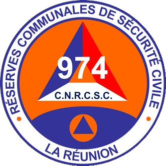

Délégation Départementale de La Réunion
Centre National des Réserves Communales de Sécurité Civile — cartes de visite
Jérôme Lassalle — Président
Charles Curcio — Coordinateur Départemental
Manuel Boudeau — Trésorier